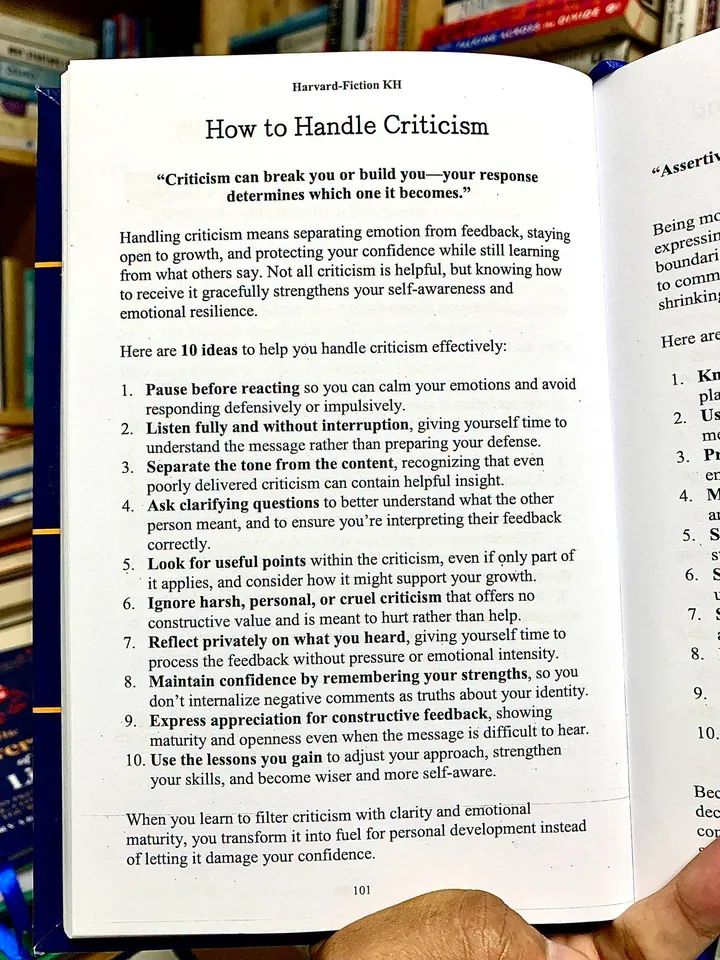

Kabut tipis masih menggantung di atas kawasan Dago Pakar ketika Nadia melangkah masuk ke ruang lobi Parahyangan Global Macro, salah satu hedge fund paling eksklusif dan agresif yang beroperasi dari dataran tinggi kota Bandung. Udara dingin yang menusuk tulang di luar berbanding terbalik dengan panasnya tekanan di dalam gedung perkantoran berdesain minimalis industrial ini. Deretan terminal Bloomberg berkedip tanpa henti, memancarkan cahaya hijau dan merah yang memantul di kacamata anti-radiasi milik para analis kuantitatif yang sudah bekerja sejak bursa Tokyo dibuka.
Nadia, seorang Manajer Portofolio Senior yang dikenal dengan algoritma prediktifnya yang tajam, meletakkan tas kerjanya dengan gerakan pelan. Usianya baru menginjak tiga puluh dua tahun, namun ia sudah mengelola aset bernilai triliunan rupiah. Pagi ini, bagaimanapun, bukanlah pagi yang biasa. Udara di lantai perdagangan terasa lebih padat, seolah mengandung listrik statis yang siap menyengat siapa saja. Data inflasi Amerika Serikat yang keluar tengah malam tadi benar-benar menghancurkan posisi jangka pendek yang telah ia bangun dengan susah payah selama tiga bulan terakhir. Strategi short pada sektor teknologi yang ia rancang dengan keyakinan penuh, tiba-tiba berbalik arah menghantam kinerja dana kelolaannya.
Di ujung ruangan, pintu kaca buram bertuliskan 'Chief Investment Officer' terbuka. Dari sana muncul Bramantyo, pendiri sekaligus nakhoda utama Parahyangan Global Macro. Pria berusia pertengahan lima puluhan itu memiliki reputasi yang melegenda di kalangan pasar modal Indonesia—cerdas, instingnya setajam pisau bedah, namun mulutnya bisa lebih kejam dari pasar bearish itu sendiri. Bramantyo tidak pernah mentoleransi kesalahan, apalagi yang bersumber dari miskalkulasi risiko dasar. Langkahnya yang tegas menuju ruang rapat utama sudah cukup untuk membuat suasana ruangan menjadi hening seketika.
Nadia menelan ludah. Ia tahu apa yang akan terjadi. Rapat evaluasi portofolio pagi ini akan menjadi pengadilan baginya. Ia meraih buku catatannya, merapikan blazer navy-nya, dan berjalan menuju ruang kaca di tengah ruangan tersebut. Di dalam, Reza, seorang Manajer Risiko yang juga sahabat lamanya sejak kuliah di ITB, sudah duduk menatap layar laptopnya dengan dahi berkerut. Reza memberinya tatapan simpatik yang justru membuat perut Nadia semakin mual.
"Kita mulai saja," suara bariton Bramantyo memecah keheningan bahkan sebelum Nadia sempat duduk sepenuhnya. Pria itu melemparkan sebuah map berisi cetakan kurva kinerja portofolio ke tengah meja. Garis merah yang menukik tajam mendominasi halaman pertama. "Nadia, saya butuh penjelasan. Bukan alasan makroekonomi klise tentang kejutan The Fed. Saya butuh penjelasan mengapa model kuantitatif yang kamu banggakan itu gagal memprediksi tail-risk dari pergerakan ini. Portofolio kita berdarah pagi ini, dan ini murni karena kecerobohanmu dalam membatasi eksposur."
Kata 'kecerobohan' meluncur dari mulut Bramantyo seperti peluru tajam. Nadia merasakan panas menjalar di lehernya. Refleks pertamanya adalah membela diri, menyusun argumen bahwa tidak ada satupun analis di Wall Street yang memprediksi pivot kebijakan secepat itu. Jantungnya berdetak kencang, memompa adrenalin yang mendesaknya untuk merespons secara defensif.
Namun, di tengah badai emosi yang berkecamuk, memori Nadia kembali pada sebuah halaman buku yang baru saja ia baca akhir pekan lalu. Sebuah buku tentang psikologi kepemimpinan dan ketahanan mental di lingkungan bertekanan tinggi. Ia teringat aturan pertamanya: Pause before reacting. Jeda sebelum bereaksi.
Nadia menarik napas panjang, diam-diam menghitung sampai tiga di dalam hatinya. Ia membiarkan emosi awalnya yang impulsif mereda. Ia menatap mata Bramantyo dan memilih untuk tidak langsung membuka mulut. Ia mendengarkan. Ia mendengarkan sepenuhnya tanpa menyela, memberi dirinya waktu untuk memahami pesan yang disampaikan Bramantyo, alih-alih sibuk meracik peluru pembelaan di dalam kepalanya.
"Modelmu terlalu naif," lanjut Bramantyo, suaranya meninggi, nadanya penuh frustrasi dan kekecewaan. "Kamu terlalu percaya diri dengan data historis lima tahun terakhir, tapi kamu buta terhadap pergeseran paradigma yang sedang terjadi. Kamu mengabaikan parameter volatilitas ekstrem. Ini bukan sekadar kesalahan matematis, Nadia. Ini adalah arogansi intelektual. Kamu bermain-main dengan uang investor seperti seorang amatir yang baru belajar trading harian!"
Kata 'amatir' dan 'arogansi' itu menyengat. Sangat menyengat. Reza di seberang meja sedikit bergeser dari kursinya, tampak tidak nyaman dengan serangan personal yang dilontarkan bos mereka. Ia mencoba membuka mulut untuk menengahi, "Pak Bram, mungkin kita bisa melihat kembali asumsi dasar modelnya sebelum kita—"
"Saya sedang bicara dengan Nadia, Reza," potong Bramantyo tajam, tanpa mengalihkan pandangannya dari Nadia.
Nadia kembali menerapkan prinsip yang ia pelajari. Memisahkan nada bicara dari isi pesan. Separate the tone from the content. Ya, Bramantyo terdengar marah, kasar, dan sangat mengintimidasi. Kalimatnya dibumbui dengan serangan personal yang menyakitkan. Tetapi, apakah ada kebenaran di balik kemarahannya? Nadia menyingkirkan ego-nya sejenak. Jika ia mengabaikan kata 'amatir' dan 'arogansi' yang diucapkan Bramantyo, apa inti dari kritiknya? Intinya adalah: modelnya gagal memperhitungkan pergeseran paradigma baru dan kurang memiliki perlindungan terhadap volatilitas ekstrem.
Secara matematis dan objektif, Bramantyo benar.
Nadia menegakkan duduknya. Wajahnya tetap tenang, sebuah kontras yang mencolok dari aura panas yang dipancarkan atasannya. Ia menatap Bramantyo, dan alih-alih melawan, ia mengajukan pertanyaan klarifikasi.
"Bapak benar bahwa drawdown pagi ini berada di luar batas toleransi kita," ucap Nadia dengan nada suara yang terkendali, datar namun penuh hormat. "Saya ingin memastikan bahwa saya memahami titik buta yang Bapak maksud. Ketika Bapak menyinggung soal parameter volatilitas ekstrem yang diabaikan, apakah Bapak merujuk pada ketidakmampuan model saya dalam menangkap korelasi silang antar kelas aset saat terjadi shock likuiditas secara tiba-tiba, atau Bapak melihat ada kelemahan mendasar dalam cara saya menetapkan bobot pada sektor teknologi itu sendiri?"
Pertanyaan itu mengubah dinamika ruangan secara instan. Bramantyo, yang mungkin mengharapkan bantahan emosional atau alasan-alasan rasionalisasi dari Nadia, terdiam sejenak. Kemarahan di matanya meredup, digantikan oleh kilatan analitis yang menjadi ciri khasnya saat membedah pasar.
"Keduanya," jawab Bramantyo, kali ini dengan nada yang jauh lebih tenang, lebih seperti seorang mentor yang sedang menguji muridnya daripada seorang algojo. "Tapi yang paling fatal adalah korelasi silangnya. Ketika likuiditas mengering, korelasi semua aset berisiko akan menuju angka satu. Modelmu masih mengasumsikan diversifikasi akan menyelamatkanmu. Itu kesalahan pemula. Kamu perlu memasukkan fungsi penalti yang lebih agresif ketika volatilitas tersirat menembus ambang batas tertentu."
Nadia mengangguk pelan, mencatat dengan cepat di bukunya. Ia sedang mempraktikkan langkah berikutnya: mencari poin-poin yang berguna di dalam kritik tersebut, bahkan jika hanya sebagian yang relevan, dan memikirkan bagaimana hal itu dapat mendukung pertumbuhannya. Ia dengan sengaja mengabaikan kritik yang kasar dan personal—sebutan 'amatir' itu tidak memiliki nilai konstruktif dan hanya dilontarkan karena emosi sesaat. Ia tidak akan membiarkan hal itu menghancurkan identitas profesionalnya.
Rapat itu berlangsung selama satu jam lagi, di mana ketiganya mulai membedah kode dan algoritma secara teknis. Bramantyo masih sesekali melontarkan komentar sinis, namun Nadia berhasil mempertahankan benteng emosionalnya, menyaring kata-kata bosnya dengan kedewasaan, mengambil mutiara pengetahuannya, dan membuang lumpur emosinya.

Sore harinya, setelah pasar Eropa dibuka dan keadaan sedikit lebih stabil, Nadia dan Reza duduk di balkon kantor mereka, menghadap pemandangan kota Bandung yang mulai dihiasi lampu-lampu jalanan. Angin sore berhembus sejuk membawa aroma pinus.
Reza menyesap kopi hitamnya sebelum berbicara. "Kamu luar biasa tadi pagi, Nad. Sumpah. Kalau aku yang jadi kamu, aku mungkin sudah membanting laptop dan menyerahkan surat pengunduran diri saat itu juga. Bramantyo benar-benar kelewatan dengan pilihan kata-katanya."
Nadia tersenyum tipis, pandangannya menerawang ke arah Jembatan Pasupati yang tampak di kejauhan. "Awalnya aku juga ingin melakukan itu, Rez. Rasanya seperti ditelanjangi di depan umum. Tapi, aku ingat sesuatu yang kubaca." Nadia mengingat proses refleksi pribadinya. Reflect privately on what you heard.
"Kritik itu, kata buku yang kubaca, bisa menghancurkanmu atau membangunmu—dan respons kitalah yang menentukan hasil akhirnya," lanjut Nadia, suaranya tenang namun penuh keyakinan. "Kalau aku bereaksi dengan ego, aku hanya akan menjadi pegawai yang sakit hati. Tapi kalau aku memisahkan antara Bramantyo si pria pemarah dan Bramantyo si jenius pasar modal, aku mendapatkan pelajaran berharga bernilai miliaran rupiah secara gratis."
Reza mengangguk setuju, raut wajahnya menunjukkan kekaguman. "Kamu tidak merasa harga dirimu direndahkan saat dia memanggilmu amatir?"
"Itu langkah kedelapan, Rez. Maintain confidence by remembering your strengths. Menjaga kepercayaan diri dengan mengingat kekuatan kita. Aku tahu aku bukan amatir. Aku lulusan terbaik, aku punya rekam jejak menghasilkan alfa berturut-turut selama tiga tahun. Satu komentar kasar dari Bramantyo karena dia sedang stres melihat drawdown portofolio tidak lantas menghapus semua identitas dan pencapaianku. Aku menolak menginternalisasi komentar negatifnya sebagai kebenaran tentang diriku. Aku hanya mengambil bagian yang mengkritik hasil kerjaku, bukan diriku."
Nadia menghabiskan sisa malam itu di depan komputernya hingga larut. Ia tidak pulang ke apartemennya. Ditemani secangkir kopi dan dinginnya malam kota Bandung, ia membedah ulang setiap baris kode dalam model kuantitatifnya. Ia menggunakan pelajaran yang ia dapatkan dari rapat pagi tadi untuk menyesuaikan pendekatannya. Ia menambahkan modul baru yang secara dinamis menghitung korelasi silang berdasarkan lonjakan likuiditas pasar, persis seperti yang disarankan Bramantyo yang sebelumnya tersembunyi di balik omelan kasarnya. Ia menggunakan kritik itu sebagai bahan bakar untuk pengembangan diri, bukan sebagai racun yang merusak kepercayaan dirinya.
Waktu berlalu dengan cepat di industri keuangan. Tiga minggu kemudian, pasar global kembali terguncang. Kali ini, sebuah krisis utang di salah satu perusahaan properti raksasa di Asia Timur memicu kepanikan jual massal yang merambat ke seluruh bursa dunia. Indeks merah lebam. Banyak hedge fund yang terpaksa melakukan likuidasi paksa karena terkena margin call.
Namun, di lantai bursa Parahyangan Global Macro di Bandung, suasananya berbeda. Memang tegang, namun terkendali.
Nadia duduk tegak di kursinya, matanya terpaku pada monitor yang menampilkan kinerja portofolionya. Model baru yang ia sempurnakan dari kritik Bramantyo telah bekerja dengan sempurna. Saat indikator likuiditas mulai menunjukkan anomali dua hari sebelum kejatuhan besar, algoritma Nadia secara otomatis memangkas eksposur risiko, membeli instrumen pelindung nilai berbasis volatilitas, dan bahkan membalikkan beberapa posisi untuk mengambil keuntungan dari kepanikan pasar.
Sementara banyak dana kelolaan lain melaporkan kerugian dua digit, portofolio yang dikelola Nadia justru mencetak keuntungan bersih sebesar empat persen dalam satu hari—sebuah pencapaian fenomenal di tengah kondisi pasar yang hancur lebur.
Bramantyo keluar dari ruangannya. Langkahnya tidak lagi terburu-buru seperti tiga minggu lalu, melainkan terukur. Ia berjalan menghampiri meja Nadia. Beberapa analis lain melirik dari sudut mata mereka, penasaran dengan apa yang akan dikatakan sang CIO.
Bramantyo berdiri di belakang Nadia, menatap layar monitor yang menunjukkan kurva keuntungan yang menanjak mulus di tengah lautan data berwarna merah. Ia terdiam cukup lama, menganalisis komponen dari posisi portofolio yang ada.
"Kamu mengimplementasikan penyesuaian korelasi silang itu," kata Bramantyo akhirnya, suaranya datar namun sarat akan pengakuan profesional.
Nadia memutar kursinya untuk berhadapan dengan atasannya. Ia menatap Bramantyo dengan penuh percaya diri, namun tetap dengan kerendahan hati seorang pembelajar sejati.
"Ya, Pak," jawab Nadia mantap. "Saya memodifikasi algoritmanya berdasarkan diskusi kita tiga minggu lalu. Saya menyadari bahwa model saya sebelumnya terlalu rapuh terhadap guncangan asimetris. Kritik Bapak tentang kelemahan perlindungan volatilitas ekstrem sangat akurat. Saya ingin mengucapkan terima kasih atas umpan balik yang Bapak berikan waktu itu. Hal tersebut benar-benar membantu saya melihat kelemahan struktural yang selama ini luput dari pengamatan saya."
Itu adalah penerapan langkah kesembilan: Mengekspresikan apresiasi untuk umpan balik yang konstruktif. Menunjukkan kedewasaan dan keterbukaan bahkan ketika pesan awalnya sangat sulit untuk didengar.
Bramantyo tertegun sejenak. Ia sangat jarang—bahkan mungkin tidak pernah—mendapatkan ucapan terima kasih dari bawahannya setelah ia memarahi mereka. Biasanya mereka akan menghindarinya, merasa benci, atau malah mengundurkan diri. Pria paruh baya itu menatap Nadia lekat-lekat, menyadari bahwa ia tidak sedang berhadapan dengan sekadar analis cerdas biasa, melainkan seorang profesional dengan kematangan emosional yang luar biasa.
Sebuah senyum tipis, yang sangat langka terlihat, muncul di sudut bibir Bramantyo. Ia menepuk pelan meja kerja Nadia.
"Kerja bagus, Nadia. Eksekusi yang brilian. Siapkan laporan detail tentang performa model baru ini. Kita akan mempresentasikannya di hadapan dewan investor minggu depan. Mereka perlu tahu bahwa kita memiliki manajemen risiko terbaik di industri ini."
Bramantyo berbalik dan berjalan kembali ke ruangannya. Di meja seberang, Reza memberikan acungan jempol tersembunyi kepada Nadia, tersenyum lebar.
Nadia kembali menghadap layarnya, merasakan kelegaan yang luar biasa dan rasa bangga yang mengakar dalam. Ia menyadari sepenuhnya kebenaran kalimat pembuka dari buku yang ia baca: Kritik bisa menghancurkan atau membangun. Dan dengan kejernihan pikiran serta kematangan emosional, Nadia telah memilih untuk mengubah kritik yang menyakitkan itu menjadi bahan bakar terbaik untuk pertumbuhan profesionalnya. Ia tidak membiarkannya merusak kepercayaan dirinya; sebaliknya, ia menggunakannya untuk menajamkan keterampilannya, menjadikannya manajer portofolio yang jauh lebih bijaksana dan tangguh di salah satu industri paling kejam di dunia.
Di luar jendela, matahari mulai bersinar cerah menembus awan mendung di atas langit kota Bandung, secerah prospek karir yang kini membentang di hadapan Nadia.